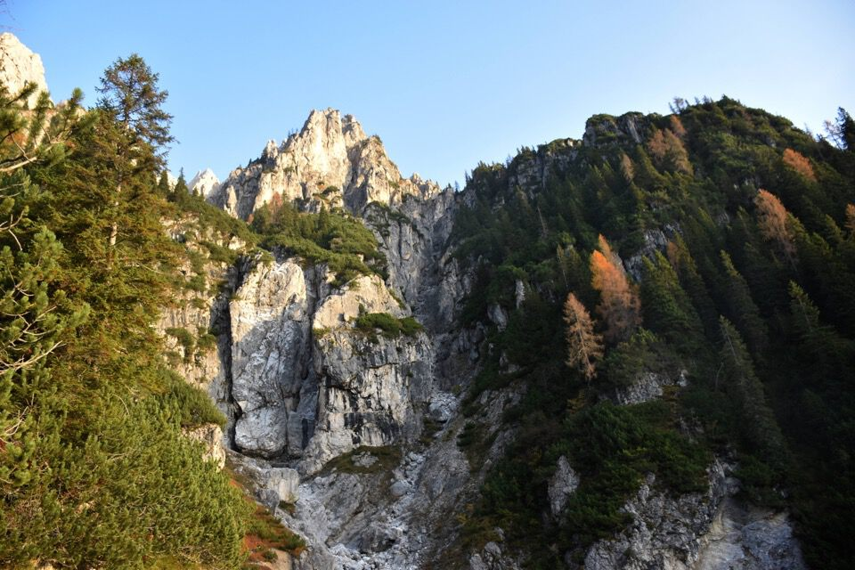
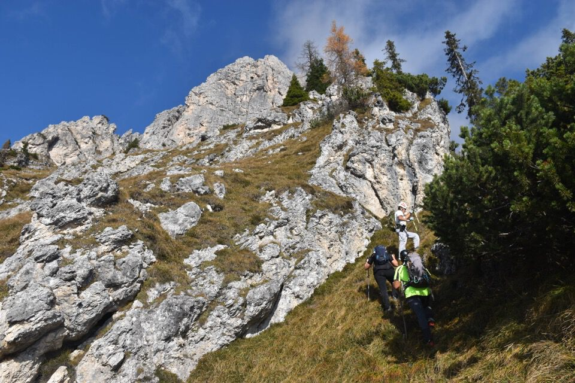
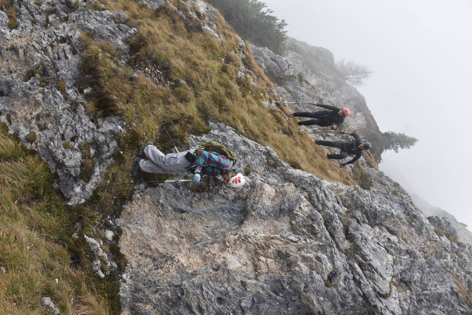

Per la disertata via normale: non si può chiedere di meglio, nessun segno, neanche un omino, tutto da cercare. C'è tutto: canaloni, mughi invalicabili, ripide pale erbose, passaggi su roccia. La quintessenza dell'andare per monti, l'alpinismo dei pioneri, quello che sfrutta abilmente i punti deboli della montagna: fatica e gioia nel confrontarsi liberamente con la montagna.
Prima dell'alba, da Pian di Casa, verso le magnifiche crode e torri del gruppo Clap; ben evidente l'enorme terrazzamento denominato «Clap Piccolo».
Laggiù, arditissime, la Torre di Clap Piccolo (giudicata dal Gaberscik la più bella cima del gruppo) e la Creta Livia.
Eccoci al Clap Piccolo vero e proprio con ciò che resta della casera: il Cretòn domina lassù.
Arriviamo al vallone di Pradibosco.
La visione della nostra croda, così slanciata, ci esalta.
Splendido e ameno valloncello, del tutto nascosto: un luogo rilassante in mezzo ai precipizi. Verrebbe voglia di metterci una tenda...
Gaberscik dice I° grado, insomma...

Manca poco: vedremo qualcosa di là?
Chi va per monti sa bene che gioia e che botta di vita si provano quando di colpo «di là» il cielo è terso.
Avevo anche altri programmi «per allungare», ma non è il caso.
Sappada.
È fatta.
L'obiettivo era concludere l'anello scendendo per la cresta Ovest alla Crete Brusade (evidentando però le pericolose Tre Lame!), ci abbiamo provato, ma il nebbione ci ha fatto fare dietrofront: impensabile, senza vedere nulla, avventurarsi su quel terreno (II, friabile ed esposto) senza conoscere già la via!
La via in discesa di rivela un labirinto, nonostante fossi stato attento a memorizzarla bene!
Grazie Rino Gaberscik.